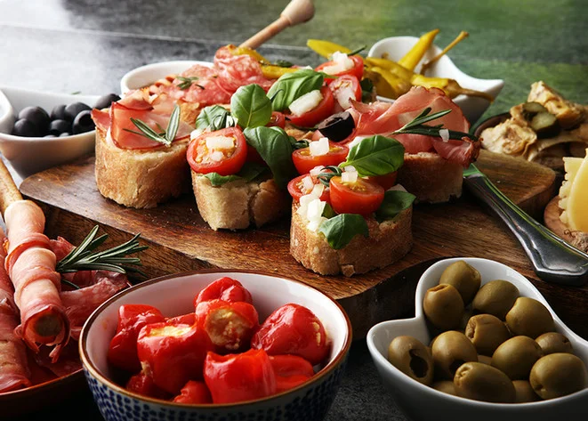
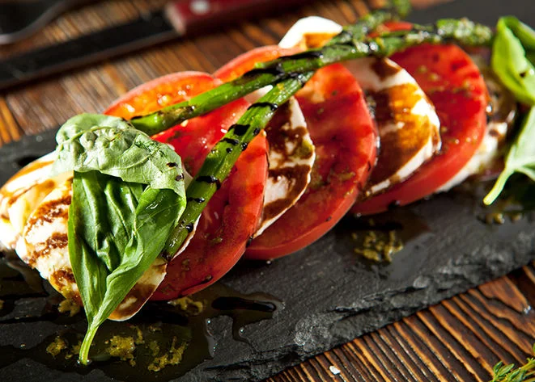
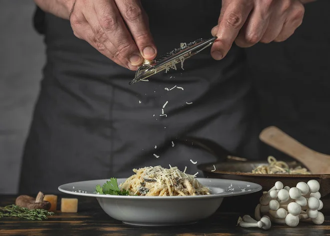

Donderdag 24 december
Kerstavond
Gesloten
Valentino, ristorante | bar in Someren
Door een grote passie voor de Italiaanse gastronomie is Valentino Someren ontstaan. Kom langs en ervaar de Italiaanse gezelligheid zoals hij bedoeld is! Met heerlijk eten, drinken en goed gezelschap. Een mix van de Italiaanse en Brabantse gezelligheid.
Italiaanse hapjes als aperitief of voor tijdens de borrel.
15:00 - 17:00 en 20:00 - 21:30Lunchkaart, klassiek Italiaans.
12:00 - 15:00Dinerkaart, genieten naar eigen ingeving.
17:00 - 22:00Valentino is een horecagelegenheid in het centrum van Someren. Wij staan voor bourgondisch genieten van de lekkerste producten.
Er is bewust gekozen om restaurant en bar gescheiden van elkaar te houden, maar samen vormt het een geheel en het versterkt elkaar. Kom langs en start lekker in het borrelgedeelte met wat kleine klassiek Italiaanse hapjes en een frisse aperitief. Neem vervolgens plaats aan de dinertafel en stel een heerlijk menu samen of neem iets kleins.
Buon appetito!



Vier de kerst bij Valentino. Kerstprogramma 2026.
Kerstavond
Gesloten
1e kerstdag
2e kerstdag
3e kerstdag
Reserveer nu een tafeltje voor de kerstdagen! Bel naar 0493 782 789 of mail naar info@valentino-someren.nl. Zet duidelijk erbij voor welke dag je wilt komen en waarvan je gebruik wilt maken. Vol = vol.
Origineel: kerstprogramma 2026 als PDF
Wij zoeken leuke collega's die ons team willen versterken.
Vind je het leuk om nieuwe dingen te leren en ben je op zoek naar een leuke uitdaging, dan nodigen we je graag uit voor een gesprek. Deel je de passie voor lekker eten en bourgondisch genieten? Dan ben je bij Valentino aan het juiste adres.
SolliciterenWie zich inzet wordt beloond! Met kans op doorgroeimogelijkheden binnen en buiten het bedrijf biedt Valentino een passende functie voor jou. Wij vinden het belangrijk dat het werk ook uitdagend blijft en bieden dan ook cursussen en trainingen aan om het vernieuwend te houden.
Spreekt onze Italiaanse gastronomie je aan? Stuur ons dan een berichtje of bel ons. Dan plannen we op korte termijn een kennismakingsgesprek in.
Bel ons, mail ons, of loop gewoon even binnen. Onze deuren staan open.
Valentino ristorante | barKerst: zie het kerstprogramma. Op 24 december zijn we gesloten.